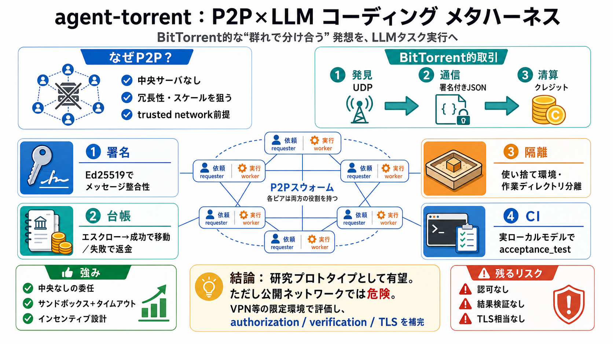

LLMRisks Archive - OWASP Gen AI Security Project
[Skip to content](https://genai.owasp.org/llm-top-10#content "Skip to content"). * [GETTING STARTED](https://genai.owa…

BitTorrentの“群れで分け合う”発想を、LLMタスクの実行に応用するP2P研究プロトタイプです。（メタハーネス: harness間のハブ構想 / ハーネス相当）
中央サーバやコーディネータなしで、ピア同士が相互にタスクを委任・実行する設計を狙います。発見・接続・状態管理はピア側実装に依存します。
「タスク（仕事）」を“分割された資源”のように扱い、ワーカーに流して実行結果を返します。取引はクレジットで清算します。
中核は「サーバレス」「メッセージ署名」「サンドボックス実行」「台帳（ダブルエントリー）」の組合せです。研究目的で見える化を優先しています。
ピアはローカルネットワーク上でUDPブロードキャストにより存在を知らせます。期限付きキャッシュと状態再構築（ゴシップ）で再起動耐性を狙います。
プロトコルは署名付きJSONメッセージで、Ed25519署名検証を受信前に行います。ピアIDは公開鍵ハッシュ（SHA-1）で一貫性を持たせます。
ワーカーは“信頼できない指示”を受けても広げないよう、作業環境を使い捨てで再構築し、許可リストのみ反映します。ハードタイムアウトとディレクトリ分離が鍵です。
依頼側がクレジットをTASK_OFFERでエスクローし、成功したらワーカーへ移します。失敗・タイムアウト・切断時は返金され、資源提供のインセンティブを支えます。
研究の透明性のため、認可層・結果検証・トランスポート暗号化（TLS相当）を“欠く”と明記されています。そのため公開ネットワークでの運用は危険です。
acceptance_test.pyはシミュレーションで“疑似的に通す”のではなく、必ず実ローカルモデルで動作させます。これにより、ハーネス連携やサンドボックスが本当に機能するかをCIに反映します。
サンドボックスとクレジット設計は説得力があります。一方で認可・結果検証・TLS欠如は、本質的リスクとして残ります。
agent-torrentは、P2P取引・サンドボックス隔離・実モデル必須のテストで研究として前進します。実用に近づけるなら、認可・結果検証・通信暗号化・監査ログなどの補完が必要です。
[Skip to content](https://genai.owasp.org/llm-top-10#content "Skip to content"). * [GETTING STARTED](https://genai.owa…
# OWASP Top 10 Agents & AI Vulnerabilities (2026 Cheat Sheet). ### A pragmatic engineering guide and cheat sheet for the…
| CVE-2026-5627A path traversal vulnerability exists in mintplex-labs/anything-llm versions up to and including 1.9.1, w…
No information is available for this page. · Learn why
# webpro255/awesome-ai-agent-attacks. ### 2026-06-23 - Dify "DifyTap" Cross-Tenant Data Exposure (CVE-2026-41947 to CVE-…